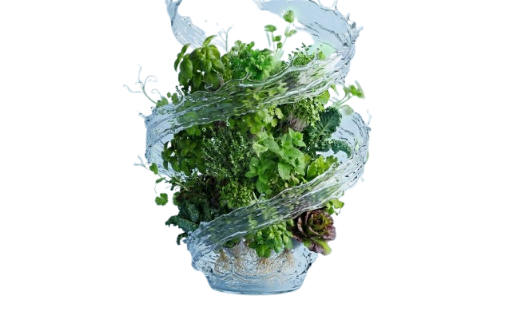

Aeroponic
Living
We grow food differently. No soil, no pesticides, just clean, fast, living architecture for your home.

Why aeroponics changes everything.
 Faster Growth
Versus soil farming
Faster Growth
Versus soil farming
Aeroponic misting delivers nutrients directly to suspended roots, accelerating growth up to 3 times faster than traditional soil cultivation.
 Farming
Zero soil, zero mess
Farming
Zero soil, zero mess
No soil means no pests, no dirt, no heavy pots. Just clean, precise growing in a pristine aeroponic environment.

Water vs. conventional farmingRecirculating mist systems use a fraction of the water that soil farming requires — sustainable growing without the environmental cost.
 Chemicals
No pesticides or fertilizers
Chemicals
No pesticides or fertilizers
The sealed, soil-free environment naturally eliminates the need for pesticides or chemical fertilizers. What you grow is exactly what it appears to be.
Living
From tower to table
Harvest ultra-fresh, chemical-free produce steps from your kitchen. Organic living isn't a purchase — it's a practice.
One tower.
Every space.
From kitchen countertops to living room focal points, Decor Aeroponic towers are designed to inhabit and elevate any environment.
 Living Room
Living Room
Larger towers like Spira and Reva become the centrepiece of any living room — a living sculpture that oxygenates and nourishes your home simultaneously.
 Outdoor
Outdoor
Take the tower outside. Spira and Reva thrive on sun-bathed balconies, bringing vertical gardens to urban terraces and rooftop spaces.
 Counter
Counter
Nova and Era are purpose-built for kitchen countertops — fresh herbs always within arm's reach, with zero trips to the store.
 Desk
Desk
A compact tower on your desk does more than grow food — it purifies air, reduces stress, and turns any workspace into a biophilic retreat.
Décor
Our towers are designed first as objects — sculptural, intentional, and beautiful. The growing is the bonus. The presence is the point.
Ready to grow?
We're not selling online just yet. Reach out to us directly and we'll help you find the right tower for your space.
Get In Touch